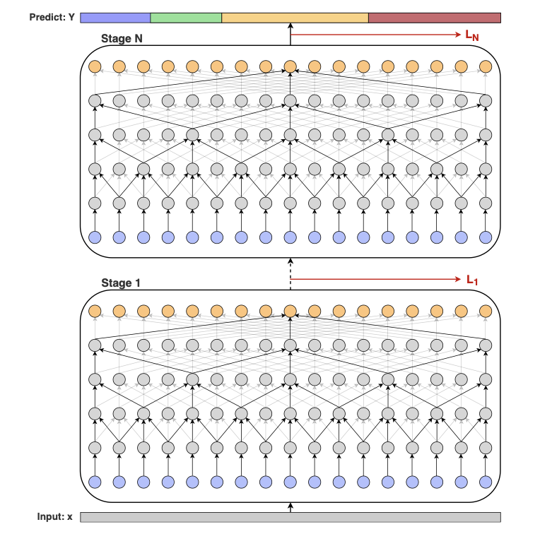
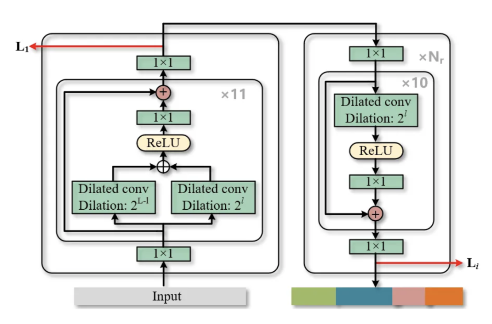
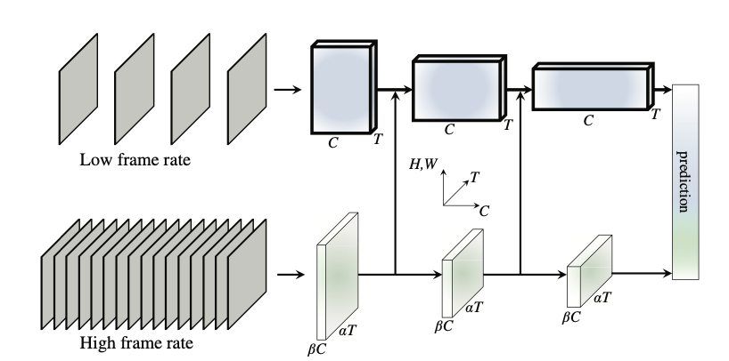
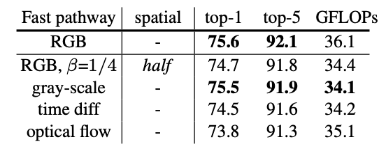
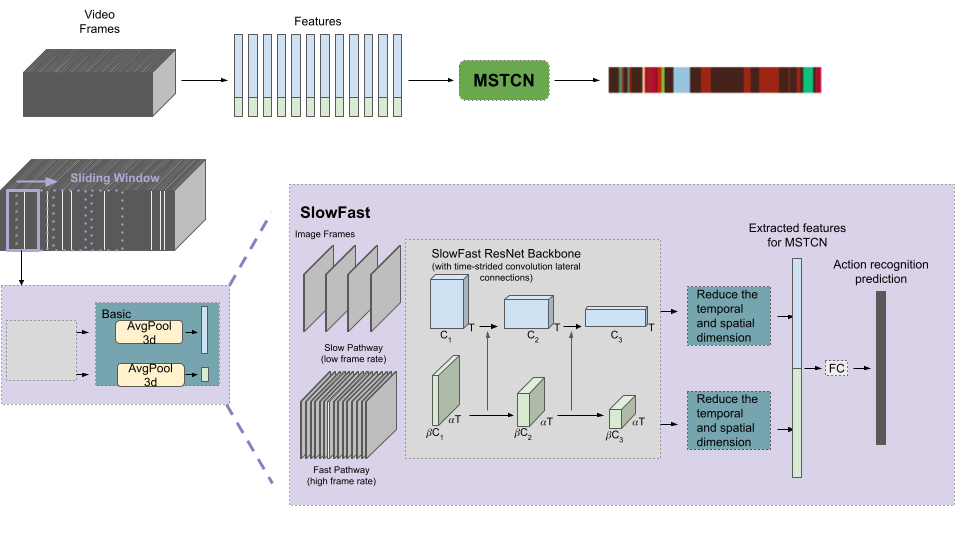
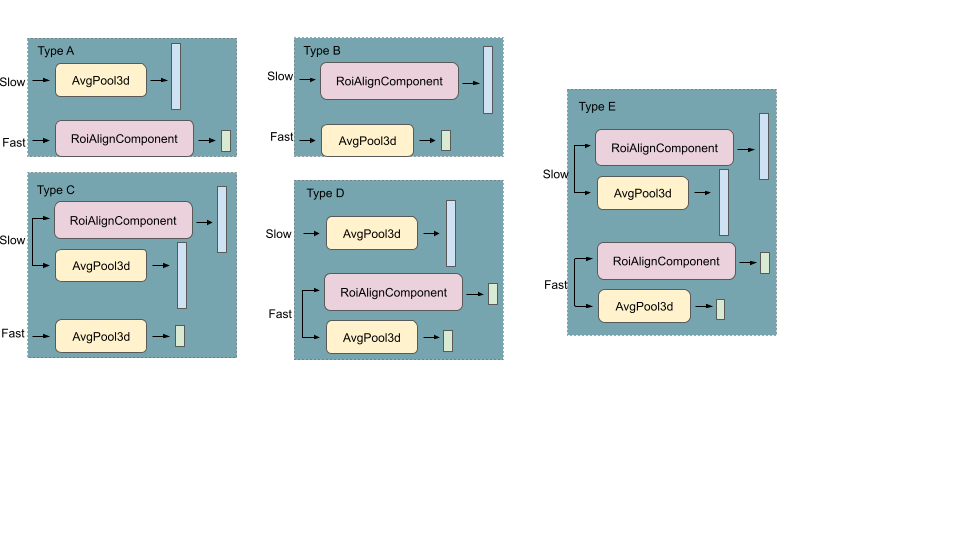
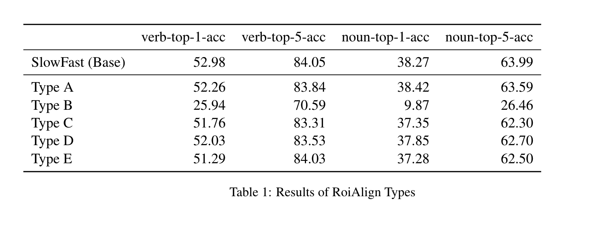
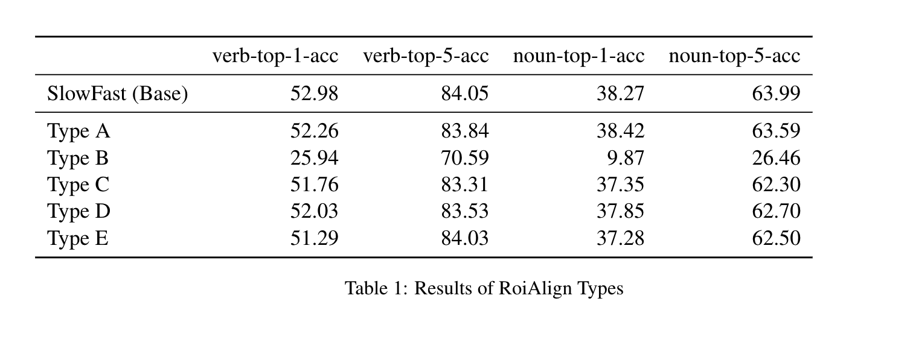

[Website: https://jwwandy.github.io/RoiSlowFast/]
Presentation
Introduction
In this project, we focused on the task of action segmentation on Epic-Kitchens Dataset. Given an untrimmed video, the task aims to segment the video into a series of actions, with each of them represented as a tuple containing the start frame, the end frame, and the predefined action class label.
We followed the pipeline of MSTCN[1] for action segmentation. MSTCN, multi-stage temporal convolution network, contains stacked stages of dilated temporal convolution units. The input of the model is the pre-extracted frame by frame deep convolutional features. The output of each stage is the action segmentation results. With MSTCN as our baseline, we aimed to enhance the segmentation results with the following modification:
- We applied SlowFast[2] achitecture to extract high frame rate and low frame rate simultaneously as input features of MSTCN pipeline
- We applied ROIAlign[4] on target actions regions for input features of MSTCN pipeline
Dataset: EPIC-KITCHEN 100
- Contains total of 100 hours of recording, 97 verb classes, and 300 noun classes
- Recording from egocentric view on unscripted kitchen events
- Larger and more complex than other cooking action segmentation datasets
Task: Action Segmentation
- Improve representation of learned feature by attending to region of interests during training
- Evaluate the quality of learned features through Action Segmentation task
- Training Task: Given a trimmed video segment, assign a verb label to the input segment
- Evaluation Task: For each frame in an untrimmed video, assign a verb class label to the frame
- Metrics: F1 score at overlapping threshold of 50% over the input video
Related Works
Our work is mainly based on MSTCN++[3] and SlowFast[2] Architecture.
Multi-Stage Temporal Convolution Network for Action Segmentation
As shown in the left figure below, MSTCN++ uses stacked stages of temporal convolutions to segment videos into actions. Each stage output the action segmentation of the untrimmed videos. The output of previous stage is used as the input of the following stage, with the pre-extracted frame by frame features being the first stage input. With multi-stage dilated temporal convolutions, the model sucessfully captures both long-term and short-term dependecies of videos for action segmentation.
Details of the each stage of MSTCN++ is shown in the right figure below. It consists of two part, the prediction generation and refinement stage. The prediction generation stage outputs the first stage prediction L1 using L dilated residual temporal convolution blocks. For the lth block, the input is passed through a dilated convolution with 2L-1 dilation and a dilated convolution with 2l dilation in parallel, and two outputs are fused with addition followed by a 1 by 1 convolution. In practice, L is equal to 11. Followed by the prediction generation stage are Nr refinement stages. For the ith refinement stage, the input is previous stage action segmentation prediction Li-1. 10 dilated residual temporal convolution blocks with increasing dilation are used to predict the current stage action segmentaiton output Li. An action segmentation loss function is applied on the each stage output. The loss applied on each stage output Li is the cross-entropy bewteen target label and prediction action label for each frame. The total loss is the sum over all frames in the videos.
 SlowFast Network for Feature Extraction
The feature extractor we used was SlowFast. The network aims to capture motion features with different temporal resolutions simultaneously, resulting in a two-branches architecture. The architecture is presented on the left. It contains two pathways: the top pathway has lower frame rate but has a larger channel size, indicating a richer spatial information. The bottom pathway contains inputs at a higher temporal frame rate. Inspired by the ablation study performed by the author, we want to tune the extracted features to assist in the action segmentation task by focusing on action-related aspects such as object of interest and the human parts that are performing the action.
 Approach
Our approach followed the MSTCN pipeline, which took a pre-extracted convolutional feature as inputs and passed through stacked stages of dilated temporal convolutions. Detailed steps are described below.
- Feature extraction using SlowFast network
- ResNet backbone
- Lateral connection (time-strided convolution) merging Fast into Slow pathway
- Apply RoiAlign selectively on output of ResNet backbone using EPIC-KITCHENS provided bounding box annotation
- Temporally, extract features using above actecture by sliding a 32-frame window along the video frames, each 4 frames apart (~12.5fps)
- Run MSTCN on extracted features
Experiments & Results
Design of ROIAlign Head with SlowFast Features
We experimented different heads for extracted features from SlowFast network, depicted as Type A to Type E in the left figure below. The right figure is the ROIAlign component.
 

- Poor performance of Type-B head shows that the slow pathway, which contains rich spatial information due to its large channel size, needs full image information, and applying RoIAlign limits its representation significantly
- The similar performance between Type-A head and basic head without any RoiAlign shows that the fast pathway, like stated in the original SlowFast paper, contributes little to spatial representation of the video clip. Comparing Type-A and Type-B head, we see that spatial information extracted from full image through the slow pathway is crucial in action recognition
- RoiAlign does not boost or hinder SlowFast performance, and this shows that context that does not include the actively manipulated objects is crucial to action recognition. Intuitively, to determine an action, such as “open”, the context change between frames plays an important role, and singling out the objects does not aid in prediction
Improve video features with SlowFast Network
We futher did an ablation study on feature extraction using SlowFast Network comparing to original I3D features as input of MSTCN. SlowFast features work better at longer segments in comparison to I3D features, but it cannot handle very short segments.

Future Directions
- Using object detectors before SlowFast to extract region of interests instead of using EPIC-KITCHENS ground truth
- Include non-local blocks in SlowFast to related region of interests across the temporal dimension
References
[1]Yazan Abu Farha, Juergen Gall. MS-TCN: Multi-Stage Temporal Convolutional Network for Action Segmentation, CVPR 2019.
[2]Christoph Feichtenhofer, Haoqi Fan, Jitendra Malik, and Kaiming He. Slowfast networks forvideo recognition, Arxiv 2019.
[3]Shijie Li, Yazan Abu Farha, Yun Liu, Ming-Ming Cheng, Juergen Gall. MS-TCN++: Multi-Stage Temporal Convolutional Network for Action Segmentation, TPAMI 2020.
[4]Kaiming He, Georgia Gkioxari, Piotr Dollár, Ross Girshick. Mask R-CNN, ICCV 2017.
Acknowledgements
This template was originally made by Phillip Isola and Richard Zhang for a colorful ECCV project, and adapted to be mobile responsive by Jason Zhang. The code can be found here.